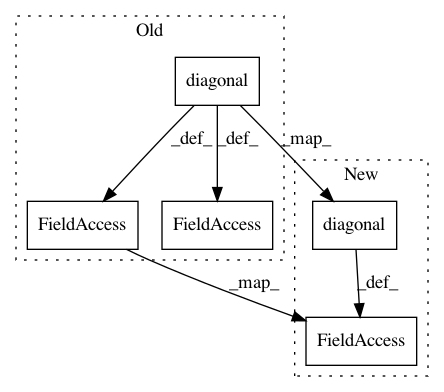

6216ab7e4df306fc4bf0763e6bfbda6c2f659f8c,grakel/kernels/graphlet_sampling.py,graphlet_sampling,fit_transform,#graphlet_sampling#Any#,225
Before Change
// Transform - calculate kernel matrix
self._phi_X = phi_x
km = np.dot(phi_x, phi_x.T)
self._X_diag = np.reshape(np.diagonal(km), (km.shape[0], 1))
if self._normalize:
self._X_diag = np.copy(self._X_diag)
km /= np.sqrt(np.multiply(self._X_diag.T, self._X_diag))
return km
After Change
self._phi_X = phi_x
km = np.dot(phi_x, phi_x.T)
self._X_diag = np.diagonal(km).reshape(km.shape[0], 1)
if self._normalize:
return np.divide(km,
np.sqrt(np.multiply(self._X_diag.T,
In pattern: SUPERPATTERN
Frequency: 3
Non-data size: 5
Instances
Project Name: ysig/GraKeL
Commit Name: 6216ab7e4df306fc4bf0763e6bfbda6c2f659f8c
Time: 2018-01-24
Author: y.siglidis@gmail.com
File Name: grakel/kernels/graphlet_sampling.py
Class Name: graphlet_sampling
Method Name: fit_transform
Project Name: ysig/GraKeL
Commit Name: 6216ab7e4df306fc4bf0763e6bfbda6c2f659f8c
Time: 2018-01-24
Author: y.siglidis@gmail.com
File Name: grakel/kernels/shortest_path.py
Class Name: shortest_path
Method Name: fit_transform
Project Name: cornellius-gp/gpytorch
Commit Name: 4d0a2ab9096fb0ed7b14b327fd2abf79c1e10476
Time: 2019-04-04
Author: eriksson@uber.com
File Name: gpytorch/lazy/added_diag_lazy_tensor.py
Class Name: AddedDiagLazyTensor
Method Name: _preconditioner